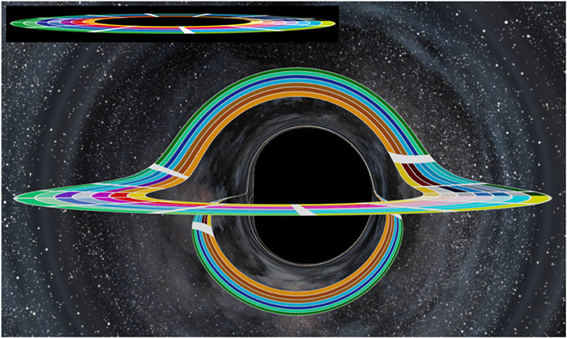
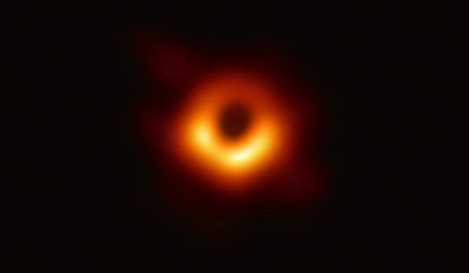
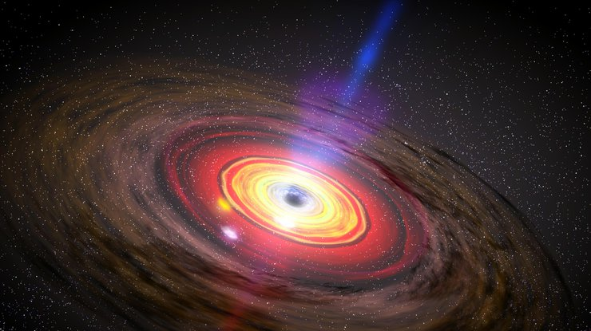

Чорна діра — це об'єкт, гравітація якого настільки сильна, що жодна з частинок не може його покинути. Одностороння межа у просторі-часі навколо чорної діри, яку не здатне перетнути навіть світло, називається горизонтом подій. Вважається, що всередині чорної діри існує сингулярність — нескінченно стиснута область, у якій гравітаційне поле стає нескінченним, а неперервна геометрія простору-часу зникає. Жодний з відомих нам законів фізики у цій точці не буде діяти.
Чорні діри — розповсюджені об’єкти у астрофізиці та мають широкий спектр мас. Найменші з них — чорні діри зоряної маси, які утворюються внаслідок гравітаційного колапсу масивної зірки. Їхня маса лежить у діапазоні від 5 до 10 сонячних мас. Надмасивні чорні діри з масами від одного мільйона сонячних існують у центрах майже усіх великих галактик.
У центрі Чумацького Шляху також є така діра, вона називається Стрілець A*, її маса еквівалентна приблизно 4 мільйонам сонячних. Механізм формування таких об’єктів лишається загадкою для вчених. Вважається, що надмасивні чорні діри з’являються на світ одночасно з галактиками, у яких вони формуються.
Чорні діри проміжної маси (у діапазоні від ста до мільйона сонячних мас) довгий час лишалися гіпотетичними об’єктами, проте нещодавно такий об’єкт зафіксували за допомогою гравітаційних хвиль. Вони утворилися внаслідок зіткнення двох чорних дір, які злилися в одну. Маса утвореного об’єкта складає 142 сонячних маси. Існує припущення, що кілька чорних дір проміжної маси, розташованих неподалік одна від одної, можуть зливатися та утворювати надмасивну чорну діру.

Зазирнути всередину горизонту подій дійсно неможливо, проте можна зафіксувати цю межу. Справа у тому, що чорна діра викривляє простір довкола себе, змінюючи траєкторію світла, та взаємодіє з матерією, яка її оточує. Вона може витягувати речовину з навколишніх зірок — це явище називають акрецією. Газ та пил, які падають на чорну діру, розігріваються та починають випромінювати радіацію. Частина цієї матерії оточує чорну діру та крутиться навколо неї, створюючи акреційний диск, який можна побачити.
Окрім того, іноді чорні діри випускають джети — направлені у два протилежних боки потужні струмені плазми, частинки яких розганяються до швидкостей, близьких до швидкості світла.

Це зображення — не фото у класичному розумінні, адже на ньому зафіксоване невидиме для людського ока радіовипромінювання, а не випромінювання у видимому діапазоні оптичного спектру.
Радіохвилі використали, тому що вони дозволяють отримати кращу роздільну здатність, аніж видиме світло. Зображення створили за допомогою Телескопа горизонту подій (Event Horizon Telescope, або EHT). Це не одна, а вісім обсерваторій у шести точках земної кулі, об’єднаних в єдину мережу. Для спостереження вчені використовували спеціальну методику — радіоінтерферометрію з наддовгою базою. Вона допомогла синхронізувати апарати та використати обертання Землі таким чином, що система спрацювала, ніби єдиний телескоп розміром з нашу планету. Це дозволило досягти роздільної кутової здатності у 20 кутових мікросекунд — цього достатньо, щоб, перебуваючи в Парижі, прочитати газету, яка знаходиться у Нью-Йорку. Після цього зібрані дані проаналізували, опрацювали та об’єднали в зображення. До проєкту долучилися більше 200 спеціалістів з 59 наукових установ у 20 різних країнах.
Загальна теорія відносності Айнштайна пов’язує гравітацію з деформацією простору-часу під дією присутньої у ньому матерії. Вона передбачає існування чорних дір. До отримання першого зображення такого об’єкта вчені спостерігали непрямі свідчення їхнього існування, наприклад, фіксуючи рентгенівське випромінювання від акреційного диску чорної діри або реєструючи сигнал від злиття двох чорних дір.

На астронавта, що впаде у чорну діру, чекає смерть — тут без варіантів. Довгий час вважалося, що, перетнувши горизонт подій, астронавт ще якийсь час буде падати вглиб чорної діри, поки припливні сили не розтягнуть його тіло, немов локшину. Для цього явища існує термін спагетіфікація. Втім, згідно з дослідженням американских вчених, квантові ефекти поблизу горизонту подій перетворюють його на стіну вогню, який підсмажить астронавта ще до того, як він перетне цю межу.
Тому як у Мак-Конегі в «Інтерстелларі» не вийде.